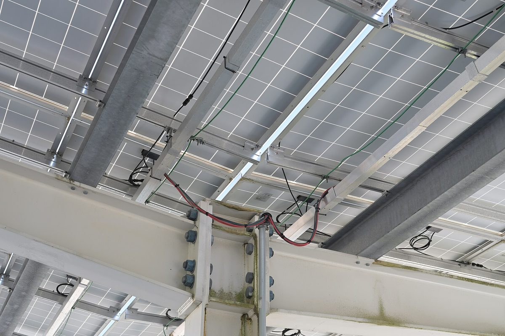

천안 공영주차장 태양광 의무 대상 20곳 중 착수 0곳…공공 유휴부지 더한 1차 추산 28곳·8MW 이상·약 130억 원

지난해 11월 법 개정으로 주차구획 1,000㎡ 이상 공영주차장 설치 의무…시는 재정 부담에 민간 참여 병행 검토, 시민단체는 50면 이하 주차장 확대·2030년 20% 목표 제안
충남 천안시에서 재생에너지 설비를 의무로 갖춰야 하는 공영주차장 20곳 가운데 사업에 들어갔거나 예산을 확보한 곳이 아직 한 곳도 없는 것으로 나타났다. 지난해 11월 재생에너지법 개정으로 주차구획면적이 1,000㎡ 이상인 공영주차장은 주차구획 10㎡당 1kW 이상의 태양광 등 재생에너지 설비를 갖춰야 하며, 주차면 한 면을 약 12.5㎡로 잡으면 대략 80면이 넘는 주차장이 대상이 된다. 시는 지난 1년 동안 대상지와 추진 방안을 검토해 왔고, 1차 조사에서는 의무 대상 주차장에 다른 공공 유휴부지를 더한 대상지가 28곳, 발전 용량은 8MW 이상, 사업비는 약 130억 원으로 추산됐다. 이규영 천안시 신재생에너지팀장은 시 재정 부담이 너무 커 추진 방식을 두고 고민이 많았다고 했으며, 시는 사업비를 모두 공공이 대기보다 민간 참여를 함께 하는 방안을 검토하면서 의무 대상 주차장부터 추진한 뒤 소규모 주차장으로 넓히는 방안을 고민하겠다고 밝혔다. 시민단체 기후행동NOW는 천안의 전력 자급률이 7%로 전국 최하위인데도 지역에너지 기본계획에 담긴 유휴부지 태양광조차 이뤄지지 않았다고 지적하며, 50면 이하 주차장까지 설치를 넓히고 2030년까지 시 전기 사용량의 최소 20%를 재생에너지로 채우는 목표를 세우자고 제안했다. 전국 지자체는 다음 달 28일까지 재생에너지 설치계획서를 내야 한다.
시민에너지 관점
설치 의무가 생긴 지 1년이 지나도록 대상 주차장 20곳 중 한 곳도 첫 삽을 뜨지 못한 것은, 약 130억 원을 시 예산으로만 채우려는 구조로는 주차장 태양광이 움직이지 않는다는 뜻이다. 프랑스는 2023년 재생에너지 생산 가속법으로 1,500㎡가 넘는 야외 주차장에 면적의 절반 이상을 태양광 차양으로 덮도록 했는데, 이처럼 의무가 커질수록 누가 돈을 대고 누가 수익을 가져가느냐가 사업의 성패를 가른다. 민간 참여가 공공 주차장 지붕을 외부 사업자의 수익원으로 넘기는 일이 될 수 있다는 우려가 있지만, 참여할 민간을 시민이 출자하는 협동조합으로 정하면 시 재정 부담은 덜고 발전 수익은 주차장을 쓰는 지역 주민에게 돌아간다. 천안시는 다음 달 28일까지 낼 설치계획서에 민간 참여 방식을 시민 출자 우선으로 밝히고, 주민이 주인이 되는 첫 주차장 사업부터 내년 예산에 담아야 한다.
출처: SK브로드밴드 B tv 뉴스 2026-10-28 송용완 원문 보기
天安市、太陽光設置が義務の公営駐車場20カ所で着手ゼロ…公共遊休地を加えた1次推計は28カ所・8MW以上・約130億ウォン
昨年11月の法改正で駐車区画1,000㎡以上の公営駐車場に設置義務…市は財政負担から民間参加の併用を検討、市民団体は50面以下の駐車場への拡大と2030年20%目標を提案
韓国・忠清南道天安市で、再生可能エネルギー設備の設置が義務付けられた公営駐車場20カ所のうち、事業に着手した所や予算を確保した所がまだ1カ所もないことが分かった。昨年11月の再生可能エネルギー法改正により、駐車区画面積が1,000㎡以上の公営駐車場は、駐車区画10㎡当たり1kW以上の太陽光などの再エネ設備を備えなければならず、1台分を約12.5㎡とすると、おおむね80面を超える駐車場が対象となる。市はこの1年、対象地と進め方を検討してきたが、1次調査では義務対象の駐車場にほかの公共遊休地を加えた対象地が28カ所、発電容量は8MW以上、事業費は約130億ウォンと見積もられた。イ・ギュヨン天安市新再生エネルギーチーム長は市の財政負担が大きすぎて進め方に悩んできたと述べ、市は事業費をすべて公共で賄うのではなく民間参加を併用する案を検討しつつ、まず義務対象の駐車場から進め、その後小規模な駐車場へ広げる方策を考えるとした。市民団体「気候行動NOW」は、天安の電力自給率が7%と全国最下位なのに、地域エネルギー基本計画に盛り込まれた遊休地太陽光さえ実現していないと指摘し、50面以下の駐車場まで設置を広げ、2030年までに市の電力使用量の少なくとも20%を再エネで賄う目標を立てるよう提案した。全国の自治体は来月28日までに再エネ設置計画書を提出しなければならない。
市民エネルギーの視点
設置義務ができて1年たっても対象駐車場20カ所のうち1カ所も着工できていないのは、約130億ウォンを市の予算だけで賄おうとする仕組みでは駐車場太陽光が動かないことを意味する。フランスは2023年の再生可能エネルギー生産加速法で、1,500㎡を超える屋外駐車場に面積の半分以上を太陽光の日よけで覆うよう求めたが、このように義務が大きくなるほど、誰がお金を出し誰が収益を得るかが事業の成否を分ける。民間参加が公共駐車場の屋根を外部事業者の収益源に明け渡すことになりかねないとの懸念もあるが、参加する民間を市民が出資する協同組合と定めれば、市の財政負担は軽くなり、発電収益は駐車場を使う地域住民に戻る。天安市は来月28日までに出す設置計画書で民間参加の方式を市民出資優先と明記し、住民が持ち主となる最初の駐車場事業から来年度予算に盛り込むべきだ。
出典: SK Broadband B tv News 2026-10-28 Song Yong-wan 原文を読む
天安市20处须安装光伏的公营停车场无一开工…加上公共闲置用地初步估算28处、8MW以上、约130亿韩元
去年11月修法后停车区面积1,000㎡以上的公营停车场须安装可再生能源设施…市政府因财政负担研究引入民间参与，市民团体提议扩大至50个车位以下停车场并设定2030年20%目标
韩国忠清南道天安市须依法配备可再生能源设施的20处公营停车场中，至今没有一处启动项目或落实预算。去年11月《可再生能源法》修订后，停车区面积达1,000㎡以上的公营停车场须按每10㎡停车区1kW以上的标准配备光伏等可再生能源设施；若按每个车位约12.5㎡计算，大约80个车位以上的停车场都属于义务对象。市政府过去一年一直在研究对象地点和推进方式，初步调查显示，义务对象停车场再加上其他公共闲置用地，共有28处，装机容量8MW以上，项目费用约130亿韩元。天安市新再生能源组组长Lee Kyu-young表示，市财政负担过重，在推进方式上颇费思量；市政府正在研究不由公共部门全额出资、而是同时引入民间参与的方案，并考虑先推进义务对象停车场，再逐步扩大到小型停车场。市民团体“气候行动NOW”指出，天安的电力自给率只有7%、为全国最低，但连地区能源基本规划中的闲置用地光伏都未落实，并提议把安装范围扩大到50个车位以下的停车场，设定到2030年用可再生能源满足全市至少20%用电量的目标。全国各地方政府须在下月28日前提交可再生能源设施安装计划书。
市民能源视角
安装义务实施一年，20处对象停车场仍无一开工，说明只靠市财政填补约130亿韩元的做法无法让停车场光伏动起来。法国2023年通过《加快可再生能源生产法》，要求面积超过1,500㎡的露天停车场用光伏遮阳棚覆盖至少一半面积；义务越大，由谁出资、由谁获益就越决定项目成败。有人担心引入民间参与会把公共停车场的顶棚让给外部企业当作收益来源，但如果把参与的“民间”确定为市民出资的合作社，既能减轻市财政负担，发电收益也会回到使用停车场的本地居民手中。天安市应在下月28日前提交的安装计划书中写明民间参与以市民出资优先，并把由居民当家作主的第一个停车场项目列入明年预算。
来源: SK Broadband B tv News 2026-10-28 Song Yong-wan 查看原文
Cheonan has started none of the 20 public car parks required to install solar; first survey including idle public land puts it at 28 sites, over 8MW and about 13 billion won
A legal change last November obliges public car parks with 1,000㎡ or more of parking area to install renewables; the city is weighing private participation because of the cost, while a civic group proposes extending it to lots of 50 spaces or fewer and a 20% target by 2030
Of the 20 public car parks in Cheonan, South Chungcheong Province, that are legally required to install renewable energy equipment, not one has yet started a project or secured a budget. Under an amendment to the Renewable Energy Act last November, public car parks with a parking area of 1,000㎡ or more must install at least 1kW of solar or other renewable capacity per 10㎡ of parking area; taking one space as about 12.5㎡, that roughly covers any car park with more than 80 spaces. The city has spent the past year reviewing sites and options, and a first survey estimated that the obligated car parks plus other idle public land add up to 28 sites with more than 8MW of capacity, at a cost of about 13 billion won. Lee Kyu-young, head of the city's new and renewable energy team, said the burden on the city budget was too heavy and the city had struggled over how to proceed; the city is considering combining private participation rather than paying the full cost from public funds, starting with the obligated car parks and later extending to smaller ones. The civic group Climate Action NOW pointed out that Cheonan's power self-sufficiency rate is 7%, the lowest in the country, yet even the solar on idle land set out in the local energy plan has not been built, and proposed extending installation to car parks with 50 spaces or fewer and setting a goal of meeting at least 20% of the city's electricity use with renewables by 2030. Local governments nationwide must submit renewable energy installation plans by the 28th of next month.
Citizen Energy View
That not one of the 20 obligated car parks has broken ground a year after the requirement took effect shows that car park solar will not move as long as the roughly 13 billion won is expected to come from the city budget alone. France's 2023 law on accelerating renewable energy production requires outdoor car parks larger than 1,500㎡ to cover at least half their area with solar shade structures, and the bigger such obligations become, the more a project's fate depends on who puts up the money and who takes the returns. Some worry that private participation could hand public car park roofs to outside developers as a source of profit, but if the private partner is defined as a cooperative funded by citizens, the city's fiscal burden falls and the generation income returns to the local residents who use the car parks. Cheonan should state in the plan due by the 28th of next month that private participation will give priority to citizen investment, and put a first resident-owned car park project into next year's budget.
Source: SK Broadband B tv News 2026-10-28 Song Yong-wan Read the original